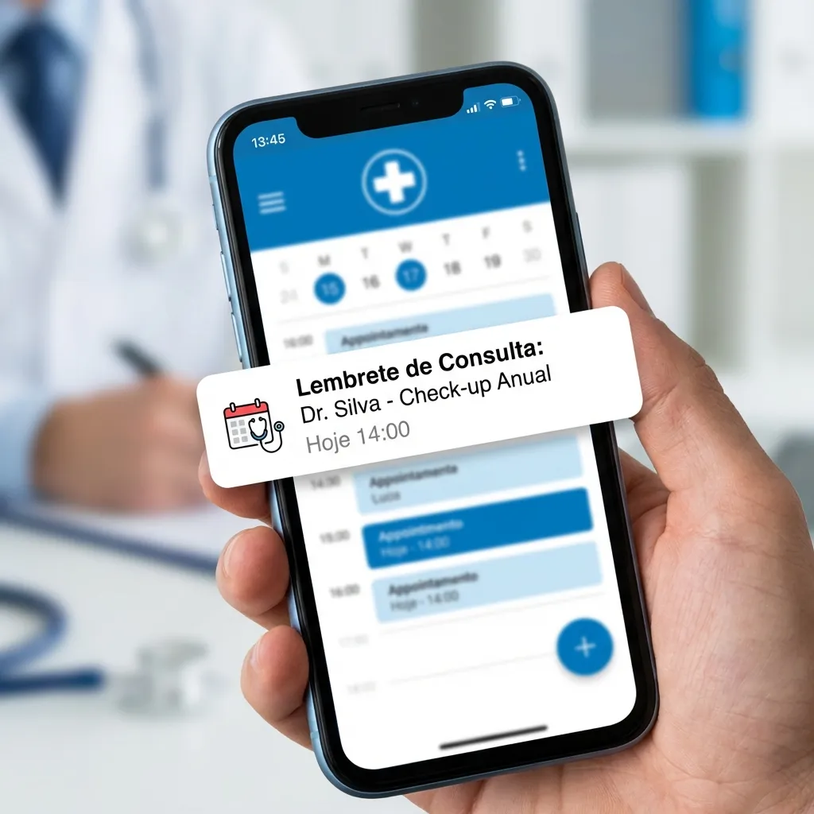

A gestão de um consultório ou clínica no Brasil é um desafio constante, e um dos maiores entraves para a eficiência e rentabilidade é, sem dúvida, a taxa de absenteísmo. Pacientes que faltam às consultas geram não apenas perdas financeiras diretas, mas também desorganizam a agenda, comprometem a produtividade da equipe e atrasam o tratamento de outros pacientes que poderiam ter sido encaixados. Mas existe uma solução eficaz e, felizmente, mais acessível do que se imagina.
Estudos e experiências de mercado indicam que as faltas de pacientes podem chegar a impressionantes 20% a 30% da agenda em clínicas médicas e odontológicas no Brasil. Essa realidade, quando analisada sob a ótica da receita perdida e do custo operacional fixo, demonstra um impacto significativo na saúde financeira do negócio. Felizmente, a boa notícia é que com a implementação de um sistema robusto de lembretes e confirmações, é possível reduzir essa taxa em até 40%, transformando um problema crônico em uma oportunidade de otimização.
O Impacto das Faltas na Saúde Financeira da Clínica
Cada consulta perdida representa um tempo ocioso do profissional, um leito vazio, uma equipe de apoio subutilizada e, claro, uma receita que não se concretizou. Em um cenário onde a margem de lucro pode ser apertada, especialmente para consultórios menores, essas perdas se acumulam rapidamente. Além do prejuízo financeiro direto, há o custo intangível de oportunidades perdidas: pacientes que poderiam ter sido atendidos e que, por falta de agendamento, buscam outros serviços, impactando a aquisição de novos pacientes e a fidelização.
A Força do Lembrete: O WhatsApp como Aliado Estratégico
A solução mais eficaz para o absenteísmo reside na comunicação proativa. E qual o canal de comunicação mais presente na vida do brasileiro? O WhatsApp. Com mais de 160 milhões de usuários no Brasil, a plataforma se tornou o principal meio de interação para a maioria da população. Um lembrete enviado via WhatsApp com antecedência e outro próximo à consulta tem uma taxa de abertura e leitura significativamente superior a e-mails ou SMS tradicionais.
Plataformas como a Aplia Saúde, que oferecem uma secretária virtual com IA integrada ao WhatsApp, permitem automatizar esse processo de forma inteligente e personalizada. Não se trata apenas de enviar uma mensagem, mas de interagir com o paciente, confirmar a presença, oferecer reagendamento facilitado e até mesmo fornecer informações preparatórias para a consulta, tudo isso enquanto sua equipe foca no atendimento presencial.
Conformidade e Segurança na Comunicação: LGPD e Ética Médica
Ao utilizar ferramentas de comunicação digital, a segurança dos dados e a conformidade com a LGPD (Lei Geral de Proteção de Dados) são cruciais. A Lei exige que as clínicas e profissionais de saúde garantam a privacidade e o tratamento adequado dos dados dos pacientes. Uma plataforma como a Aplia Saúde é desenvolvida pensando nisso, assegurando que os lembretes e interações sejam realizados de forma segura e ética, alinhada às melhores práticas e às recomendações de órgãos como o Conselho Federal de Medicina (CFM), que enfatiza a importância de uma comunicação clara e segura com o paciente para a qualidade do cuidado.
Implementando a Estratégia de Redução de Faltas
Para implementar uma estratégia eficaz, considere os seguintes pontos:
- Lembretes Multicanais: Embora o WhatsApp seja rei, considere um lembrete inicial via e-mail para agendamentos mais distantes e o WhatsApp para proximidade.
- Flexibilidade no Reagendamento: Facilite o reagendamento. Uma secretária virtual com IA pode gerenciar essas solicitações de forma autônoma.
- Personalização: Mensagens genéricas são menos eficazes. Utilize o nome do paciente e detalhes da consulta.
- Mensagens Pré-Consulta: Além do lembrete, envie informações úteis sobre a consulta (documentos necessários, tempo de espera estimado, orientações específicas).
- Monitoramento Constante: Acompanhe as taxas de falta e ajuste sua estratégia conforme necessário.
Investir em tecnologia para otimizar a comunicação com o paciente não é apenas uma questão de eficiência operacional, mas uma estratégia fundamental para a sustentabilidade e crescimento de qualquer serviço de saúde no cenário atual do Brasil. Com a Aplia Saúde, você transforma o desafio das faltas em uma oportunidade de melhorar a gestão, a satisfação do paciente e, claro, a rentabilidade do seu consultório.
Referências e Fontes
Conselho Federal de Medicina (CFM): Diretrizes éticas sobre a relação médico-paciente e comunicação, enfatizando a importância da informação clara e da adesão ao tratamento para a qualidade assistencial.
Pesquisa TIC Saúde (CGI.br): Estudos que demonstram a alta penetração e uso de tecnologias digitais, como smartphones e aplicativos de mensagens (WhatsApp), entre profissionais e pacientes da saúde no Brasil.
Serasa Experian/Datafolha: Relatórios sobre o uso de WhatsApp no Brasil, confirmando a plataforma como principal canal de comunicação para a maioria dos brasileiros, incluindo interação com serviços e empresas.
Quer parar de perder pacientes?
A Aplia é uma assistente de IA que atende seus pacientes 24/7 pelo WhatsApp, agenda consultas automaticamente e envia lembretes.
Conhecer a Aplia